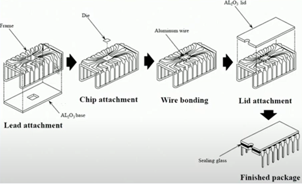
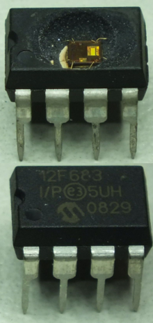
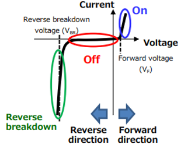
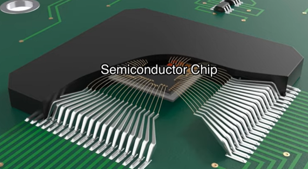
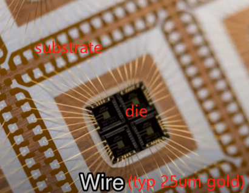
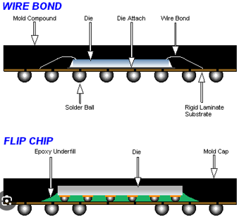
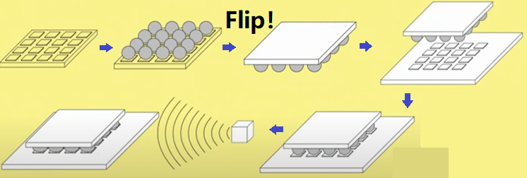
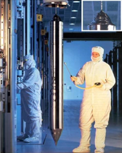

- Ceramic更贵，属于高端材料，不会用在手机、电脑里，多用于军事等需要极高hermeticity的情况。
- Ceramic的bond一般为eutectic（共熔的） solder of gold and silicon，也很贵，thermal conductivity极好。
- Ceramic制造图解（下左图）。图中的Al2O3即为一种ceramic：
-  
- Plastic的一大区别是，他不像ceramic用lid，而是直接fill-in包住整个chip，称为plastic "encapsulated" microcircuit (PEM)（上右图）。 因此不像ceramic还能打开盖子看到内部电路。
- Plastic的特征：low power（因为plastic导热性不好），moderate I/O count，lenient hermeticity requirements （虽然看似包住了整个电路，但plastic的材料容易渗透moisture。适合life span为3-5年，比如更新换代快的手机电脑，不适合20年的应用）。
PG Flow
PG = Pattern Generation，即ASIC生成最后的photomask和manufacturing database。
除了chip本身的设计，还有一些很重要但容易被忽视的topic，比如packaging, thermal management, shock & vibration等。 举例来说，overheating造成了70%的chip failure，可见thermal的重要性。 一个很好的analogy是，chip本身就像汽车的引擎，虽为核心，但如果不配上底盘、轮子和外壳，依然无法使用。 因此，本篇主要cover chip本身以外的各种支持性事物。
In the Die
除了核心电路以外，每个layout还有一些其他支持性的结构。
Pad ring: 一个IC的pad ring包括scribe streets, pads, ESD structures, and guard rings。
| Scribe streets | Scribe意为划线器。Scribe street指划片切割的时候，die与die之间给锯子留出的切割线 |
| Pads | 包括bondpads, trimpads, testpads |
| ESD strucures | 不仅限于ESD diodes，还包含其他一些结构。（所以ESD diodes是layout的一部分） |
| Guard ring | 防止latch up。Latch up即chip的VDD和ground产生相连。 |
ESD Diodes
|
Diode本身的工作原理见右图。ESD diodes主要利用reverse breakdown这个state突然开始增加的reverse current。 在系统中，如下图添加ESD Protection diodes。（DUP = device under protection）在normal operation期间，diode相当于不存在。而在ESD event时，如果voltage超过reverse breakdown voltage，diodes就会开始conduct，将ESD energy shunt到ground，保护剩余系统。 |
 |
Packaging
|
Packaging的两大作用：
一个有趣的比喻是，package就像电源插头，内部裹着真正的电路，但必须要封进插头才能用。 另外，由于package是heat flow path的第一步，所以heat dissipation也很重要。 Key Features: I/O count, Hermeticity（气密性，防潮）, Heat dissipation |
 |
|
最基础的结构：
|
 |
PGA/BGA/LGA
PGA (Pin Grid Array):- 是最古老的。中间chip正下方一般留空，可以放一大块Cu作heat sink，或者放landside capacitors。
- 整个package的中间是chip，底部是substrate（比如绿色的FR4），顶部是lid。
- Substrate底下的pin array插入PCB上对应的socket（插孔）。
BGA (Ball Grid Array):
|

|
- Contact是平面。LGA最大的特点是pins ("lands")在socket里而非在chip上。 Socket会伸出竖S形的pin，与LGA的底面接触。通过在顶面施力来形成contact，去除force则断开连接。
Flip Chip
大约在1960年首次出现，目前正在广泛使用。好处包括：
|
 |
制作过程（及名字由来）见下图，有些类似于BGA。

Continuity Test
TODO
Trimming
TODO
Trivia 豆知识
|
棉花糖🍭： 关于wafer制造的有趣比喻。就像棉花糖，先在棒上沾一点糖（对wafer来说是crystal）作为seed，然后就可以一点点转出来了。 Wafer有多大？ 见右图。 钻石💎： 每个disk上印好电路后，需要用diamond blade给切成一片一片的chip。 |
 |